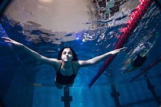

Biography
Yusra Mardini is a Syrian swimmer. Her and her sister fled from Syria during the war. They set off to find safety in Europe. In 2015, they traveled through Turkey and ended up in greece. While on their journey, their ships engine failed and Yusara and her sister saved the lives of 20 people buy swimming to safety.
A year after her heroic act, she was recognized by the International Olympic Committee, and later bacame the first ever refugee on the Olympic Team. In 2016 Yusra competed in the 2016 Olympic Games in Rio. She represented 65 million displaced people worldwide.
After her Olympic sucess Yusra began meeting with world leaders such as Barak Obama and Pope Francis. she has been given multiple awards and was recognized by Time and Peoples Magazine.
I want to go to the Olympics. It is a once-in-a-lifetime chance.– Yusra Mardini
Currently, Yusra is living in Berlin, Germany and is concentrating on her professional swimming career. One of her big goals is to compete in the 2020 Olympic Games in Tokyo. Yusra is also a Goodwill ambassador for UNHCR